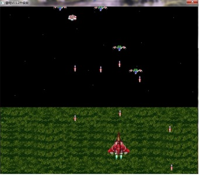
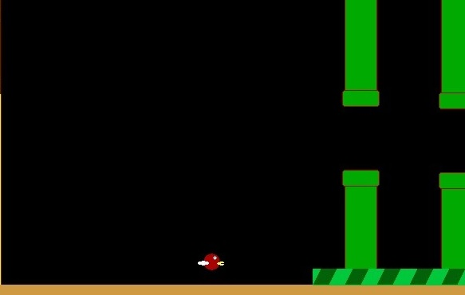
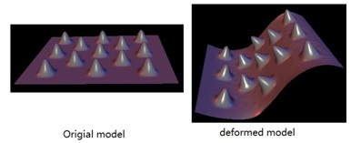
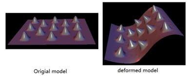
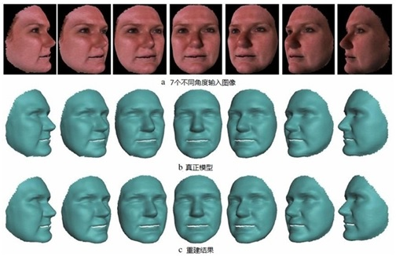
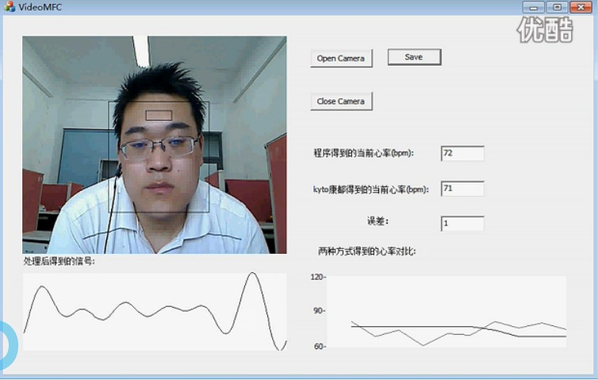
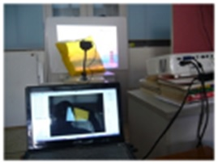
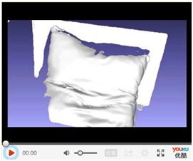
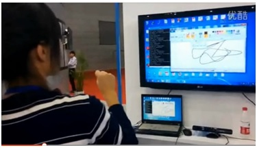

计算机图形学等方向问答
什么是机器学习？
长期招聘全职或兼职计算机视觉、图形学算法研究人员、游戏程序员(可培训)...
欢迎本科生或其他高校研究生来实习或做课题：如果您对实验室研究方向(图形学、视觉、机器学习、图像处理、3D打印、物理动画等)感兴趣的、想做些研究项目以提升自己的研究能力(数学、物理、力学及计算机等专业)，请将你的个人简历发送到相关老师Email或此Email:. 对于外校来实习或做课题的研究生，在导师同意下，可到实验室合作做研究生课题，将协助安排住宿并提供基本生活费.
游戏开发工作室 欢迎编程能力强或具有较强绘画能力的各专业学生加入，从事游戏引擎或游戏的开发工作...
2014-5-2日, 本科生黄晓林实现的基于AAM和机器学习的鲁棒人脸特征定位算法取得初步成果...
2014-5-3日, 欢迎理学院本科生陈明洋同学，加入实验室本科生研究小组（三维视觉）...
2014-5-12日, 祝贺陈明洋小组初步实现三维激光扫描的关键技术之一的光条中心提取算法...
2015-3月, 本科生邱亚楠等同学进入课题研究...
2015-4月16日, 和研究生薛传预、夏阳到浙大虚拟现实实验室、杭师大数字媒体中心参观学习，参观与学习了浙大张明敏老师的三维虚拟试衣、航师大虚许巍巍的3d打印等项目...
教师：
- 董洪伟，硕导，2001年南京航空航天大学博士毕业，美国访问学者，主要研究：三维视觉及3D打印、三维人脸动画、机器学习、物理动画、并行计算等.
- 杨开荍，2009年获日本国立九州工业大学博士学位，主要从事智能算法、计算机视觉研究.
- 徐华，硕导，2010年获南京理工大学博士学位,主要从事人工智能及应用研究.
学生：
- 在校研究生：杨勤、马成虎、薛燕娜、陈智、薛传宇、夏阳...
- 黄晓林(本科生)，保送北大深圳研究院（2014年9月）.
- 刘蕾(毕业研究生)，国家安全局某单位（2014年7月）
- 隧巧燕 (毕业研究生)，自主创业（2013年12月）
- 杨薇(毕业研究生)，苏州博世（2013年3月）
- 徐占(毕业研究生)，无锡江南计算技术研究所（总参56所）（2009年5月）
- 石坚(第一个毕业研究生)，Autodesk中国研究院（2008年1月）
Jinxiang Chao 教授( Texas A&M)
Hao li 教授(UCLA)
潘志庚教授（著名中国图形学与虚拟现实专家，原浙大CAD&CG重点实验室博导，杭州师范大学虚拟现实与人机交互研究中心），考研最新消息：欢迎没上线或被筛选的新研究生找潘老师联系，好的学生他会破格录取的.
Xiaolin Wei, 美国google研究院
Lei He,Texas A&M.
Ruoguan Huang ,Texas A&M.
李重教授,浙江理工大学数学科学系主任,校高性能计算中心副主任
平雪良教授(江南大学机器人研究实验室)
童晶,浙大CAD&CG重点实验室博士.童博士已经发表了1篇顶级期刊论文，我们合作非常密切。
刘华俊(湖北大学，湖北大学与Texas A&M联合培养博士)
主要研究领域：计算机图形学、计算机视觉、机器学习、并行计算(高性能计算)、游戏编程与开发、三维测量及3D打印、智能人机交互、智能家居、智能算法、数控技术...
游戏编程开发：不管你是小学生、还是大学生，都可以在2-3天内写出开心农场、雷电战车这样的经典小游戏。并可对初学者提供短期的培训：针对三种不同平台环境(PC\web\Mobile)下采用三种不同编程语言(C/script/Java)的三个不同的游戏编程开发短期培训。对象：具有小学学历即可。时间：15天。游戏案例： Pong游戏、扫雷程序、纸牌游戏、贪吃蛇、 Flappy bird、伐木工、开心农场、雷电战车、红色警戒、极品赛车...。请email联系我


计算机图形学：数字几何处理、物理动画...
 

计算机视觉：基于图像的三维重建、基于视频的心率检测、机器人自动导航...
 
三维扫描及3D打印：灵活、低成本的高性价比三维扫描及3D打印。
 
智能人际交互：非接触式基于视觉感知的人际交互技术,可代替鼠标与键盘用于多媒体演讲或教学.

数控技术：2002年开发的数控玻璃切割机在全国(苏州、海宁、焦作、张家港等)多家玻璃深加工企业一直用于实际生产.